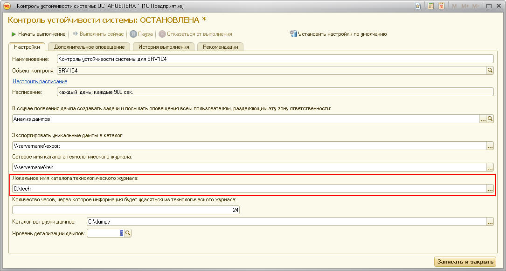
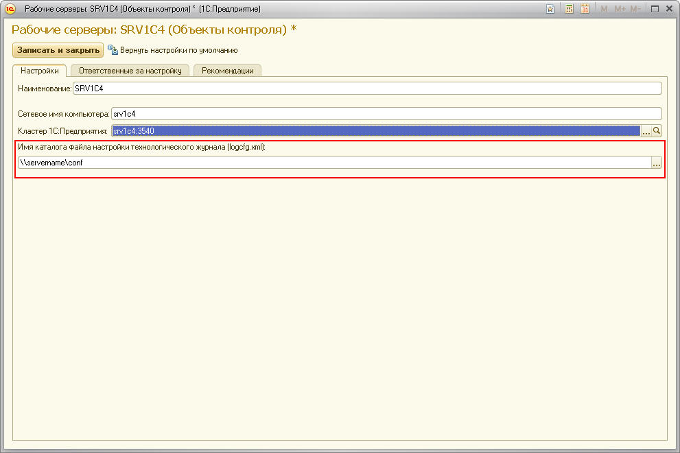
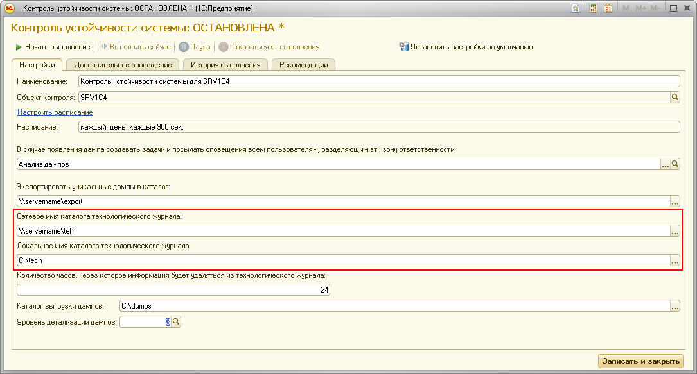

При работе контрольной процедуры был обнаружен дамп рабочего процесса кластера 1С, но технологический журнал соответствующий процессу найден не был.
Первое, что нужно проверить, это собирается ли технологический журнал.
Для того, чтобы технологический журнал собирался, нужно:


ЦКК автоматически создаёт и редактирует файл logcfg.xml при сохранении контрольной процедуры и объекта контроля, поэтому после того, как вы отредактируете и сохраните настройки, файл logcfg.xml с нужным содержанием будет создан.
Если настройки технологического журнала заполнены правильно, следующим шагом будет проверка, что в настройках контрольной процедуры сетевой путь к технологическому журналу соответствует локальному.
